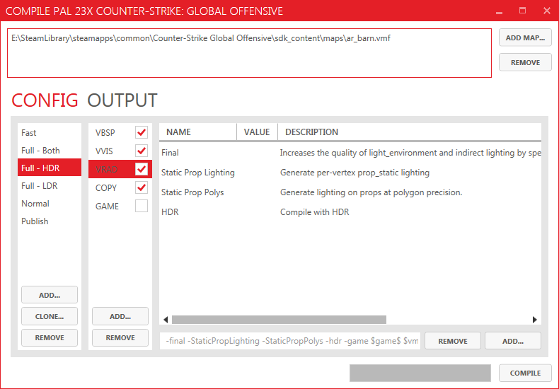
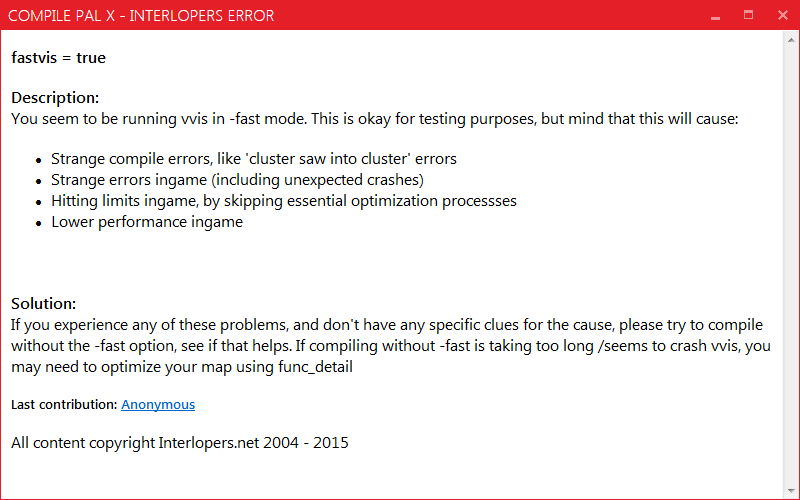

Compile Pal is the amazing wrapper for the source map compiling tools that makes compiling a breeze.
Configuration
Compile Pal should automatically find any game configurations - as long as the game’s SDK was run last. Game Configurations are cached between sessions, and you can choose between them at launch.
Packing
PACK is a feature that allows for the automatic packing of custom content into a map BSP. Thanks to the work of Maxdup, this feature is now ready to be used in production.
Packable Content
- Materials
- Models
- Model Skins
- Skybox Textures
- Sprites
- Water Materials
- Color Correction
- Detail Files
- Menu Photos
- Soundscapes
- Soundscripts
- Particle Manifests
- Much more…
Error Checking
Compile Pal can detect and provide information relating to errors using the Interlopers error listings.
Contributors
Developers
- Ruarai
- Maxdup (Maxime Dupuis)
Bug Testing
- wareya
- Gangleider
- Matt2468rv
- Sevin7